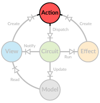

Actions
 Actions hold information on how to update the model and they are the only way to make these updates. Basically the current model is a result of all previous actions, much like in event sourcing.
In Diode actions can be anything (extending AnyRef) but typically case classes are used for easy pattern matching.
Designing Actions
Actions are very much application specific but can generally be classified into global and targeted actions. A global action is something like the examples below, always changing the same part of the model.
case class Increase(amount: Int)
case class Decrease(amount: Int)
case object Reset
Targeted actions, on the other hand, can change different parts of the model depending on the value of the action. For example if your data is in a tree, you would need to know what part of the tree should be changed. One option is to have unique IDs for data and search for the ID in the action handler, but typically it's more efficient and easier to use a path to the data.
// path is defined by a sequence of identifiers
case class AddNode(path: Seq[String], node: FileNode)
case class RemoveNode(path: Seq[String])
case class ReplaceNode(path: Seq[String], node: FileNode)
case class Select(selected: Seq[String])
If you need an action to update multiple independent parts of your model, it's usually better to break it down into several consecutive actions. This way each action handler can focus on its own part of the model and the logic is kept simple and easy to reason about. Actions are processed in the order they are dispatched, so you can be sure your sequence of actions are processed in correct order.